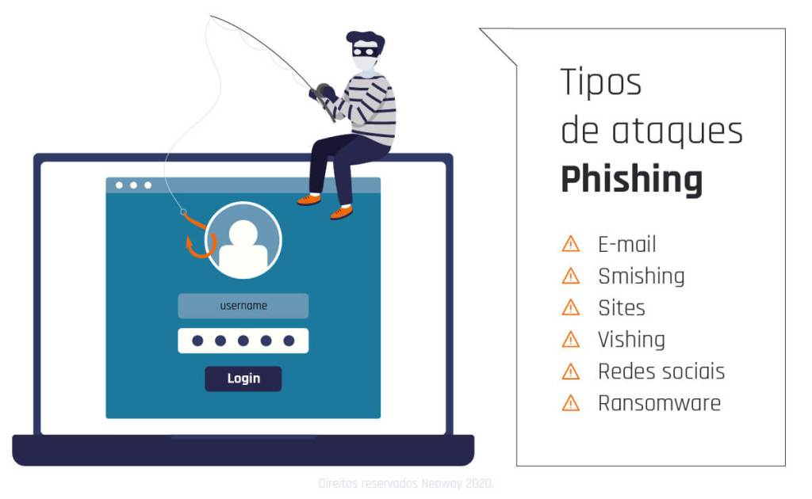

Golpe de Phishing clona site de banco e faz vítimas em todo o Brasil
Atualizado em 06/08/2025 — 14h21 | São Paulo
Phishing, smishing e vishing são tipos de ataques cibernéticos que visam roubar informações pessoais, financeiras ou sensíveis dos usuários. Esses golpes exploram a confiança das vítimas por meio de diferentes canais de comunicação — como e-mail, mensagem de texto e chamada telefônica —, com criminosos se passando por empresas legítimas para atrair internautas, além de oferecer supostos benefícios como promoções e brindes. Cada golpe tem uma abordagem diferente e conhecer essas particularidades é útil para se proteger das tentativas de fraude. A seguir, entenda como o phishing, smishing e vishing funcionam e saiba como evitá-los.
Um novo golpe de phishing está fazendo vítimas no Brasil. Cibercriminosos estão usando réplicas de sites bancários para roubar dados sensíveis.
A fraude é disseminada por e-mails falsos que simulam cobranças ou alertas. Ao clicar, a vítima acessa uma página idêntica ao site real do banco.
“As vítimas acham que estão seguras, mas estão entregando seus dados aos golpistas”, disse Carlos Monteiro, perito digital.
Como se proteger:
- Desconfie de e-mails com links suspeitos.
- Verifique sempre o endereço do site.
- Use autenticação de dois fatores sempre que possível.